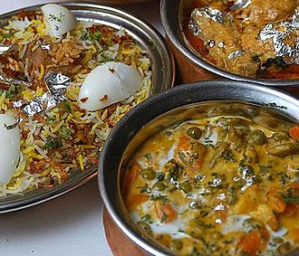

Biryani:
Biryani, also known as biriyani, biriani, birani or briyani, is a mixed rice dish with its origins among the Muslims of the Indian subcontinent. It is popular throughout the Indian subcontinent as well as among the diaspora from the region. It is also popular in other regions such as Iraqi Kurdistan. It is made with Indian spices, rice, meat (chicken, goat, beef, prawn, or fish), vegetables or eggs.